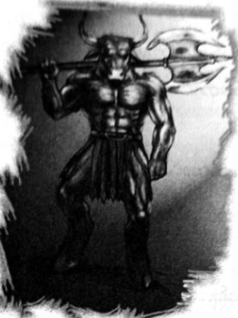

တံတားချိုးကြသူများ
ကံကောင်းသည်က ဘလက်ဂျက် အဆင်သင့် ရှိနေခြင်းပင်။ လေချွန်သံ ကောင်းကောင်း ချွန်လိုက်လျှင် မိနစ်ပိုင်း အတွင်း ကောင်းကင်၌ အနက်ရောင်အစက် နှစ်ခု ပျံသန်းလာ၏။ ပထမပိုင်းတွင် သိမ်းငှက်များလား ထင်မှတ် မှားရသော်လည်း အောက်သို့ နိမ့်ဆင်းလာသည်နှင့် ကဆုန်စိုင်းနေသော မြင်းခြေထောက်များကို မြင်လာရသည်။
“ဘော့စ် …”
ဘလက်ဂျက်နှင့် သူငယ်ချင်း ပေါ့ခ်ပိုင်းတို့ ဆင်းသက်လာကြသည်။
“လေနတ်တွေက ကျွန်တော်တို့ကို အဝင်မခံဘူး … ဘော့စ်ဆီ လာတာပါ ဆိုမှ လွှတ်လိုက်တာ …”
“ကျေးဇူးပဲ … ဒါနဲ့ နေပါဦး … မေးစရာရှိလို့ … မင်းတို့မြင်းပျံတွေ ပျံနေတုန်း ဘာကိစ္စ ခြေထောက်ကပါ ပြေးနေ ရတာလဲ … လိုမှ မလိုတာ …
ဘလက်ဂျက်က ဟီသံပြုရင်း …
“လမ်းလျှောက်ရင် လူတွေ ဘာလို့ လက်လွှဲလျှောက်ကြတာလဲ … အဲလိုပဲ ပေါ့ … မပြောတတ်ဘူး ဘော့စ် … အဲလို ပျံမှ သဘာဝကျမယ် ထင်တယ် … ဘယ်သွားမှာလဲ ဘော့စ် …”
“ဝီလီယံဘတ်ခ် တံတား ...”
“ဟုတ်တယ် ဘော့စ် … အဲဒီတံတားကို ဖြတ်ပျံလာခဲ့တာ အခြေအနေ မကောင်းဘူး … တက် …”
တံတားဆီ ပျံသန်းလာရင်း ပါစီ့ရင်ထဲတွင် ခံစားချက်တစ်ခု ဖြစ်လာခဲ့သည်။ မိုင်နိုတောမိစ္ဆာမှာ ပါစီ ပထမဆုံး နှိမ်နင်းခဲ့သည့် မိစ္ဆာဖြစ်ပြီး လွန်ခဲ့သောလေးနှစ်က တိုက်ပွဲအကြောင်း ပါစီ အိပ်မက်ဆိုးများ မက်လေ့ရှိသည်။ ရာစုနှစ် အတော်များများ အိပ်ပျော်နေပါစေဟု ဆုတောင်းမိသော်လည်း ပါစီမှာ ကံကောင်းတတ်သူ တစ်ယောက် မဟုတ်။
တိုက်ပွဲကို လေထဲမှပင် မြင်နေရပြီး ညသန်းခေါင်ကျော်ပြီ ဖြစ်သော်လည်း တံတားမှာ မီးရောင်များနှင့် လင်းလက် နေခဲ့သည်။ ကားများ မီးလောင်နေပြီး မီးတန်းများမှာ ဟိုမှဒီ ဖြတ်ပျံနေကြကာ မီးမြားများ မီးလှံများ ဖြစ်ကြ သည်။
အနိမ့်ပျံကာ ဖြတ်သန်းသွားရင်း အပိုလိုသင်တန်းသားများ တပ်ဆုတ်နေရကြောင်း တွေ့ရ၏။ ကားများနောက် တွင် ပုန်းကွယ်ကြရင်း မြားနှင့် ချောင်းပစ်ကြသလို ဗုံးများကို ပစ်လွှတ်ကြသည်။ လမ်းပေါ်တွင် ဆူးများခင်းထားကြပြီး တတ်နိုင်သော နေရာတိုင်းတွင် မီးဖြင့် လမ်းတားကြသည်။ အိပ်ပျော်နေသော ယာဉ်မောင်းများကို ကားထဲမှ ဆွဲထုတ်ကာ ဘေးလွတ်ရာ ရွှေ့ကြ၏။ သို့သော် ရန်သူများမှာ ရှေ့သို့ ဆက်တက်လာနေကြပြီး ရှေ့ဆုံးမှ ဒရာကာနေးများ ဦးဆောင် လာကြသည်။ ဒိုင်းများ ပူးကပ်ကာ အပေါ်တွင် လှံများ တပြောင်ပြောင် တလက်လက်နှင့် မြင်ရ၏။ မြားတချို့မှာ လည်ပင်းနှင့် ချပ်ဝတ်တန်ဆာ လွတ်နေသော နေရာများကို စိုက်ဝင်လာကာ ဒရာကာနေး အချို့ ပြာကျသွားကြသည်။ သို့သော် မြားတံ အများစုမှာ ဒိုင်းများကို မကျော်ဖြတ်နိုင်ကြ။ သူတို့နောက်မှ မိစ္ဆာတစ်ရာခန့် ချီတက်လာနေ၏။
ရှေ့သို့ ငရဲခွေးများ ရံဖန်ရံခါ ခုန်တက်လာကြပြီး အများစုမှာ မြားစာ ဖြစ်သွားကြသည်။ သို့သော် ငရဲခွေး တစ်ကောင်က အပိုလို အဆောင်သား တစ်ယောက်ကို ကိုက်ချီကာ ဆွဲခေါ်သွားပြီး ဘာဆက်ဖြစ်သလဲ မမြင်ရ။ သိလည်း မသိချင်တော့။
“ဟိုမှာ …”
နောက်မှ မြင်းပျံပေါ်ရှိ အန်နာဘတ်က လှမ်းပြောလိုက်သည်။ ကျူးကျော် လာသော မိစ္ဆာများအလယ်တွင် မိတ်ဆွေဟောင်းကြီးအား တွေ့ရ၏။ ယခင်တစ်ခါ ဆုံရစဉ်က မိုင်နိုတောသတ္တဝါကြီးမှာ ခါးတွင် အဝတ်ဖြူနံငယ်ပိုင်းမျှသာ ဝတ်ထားသည်။ အိပ်ရာမှ ကမန်းကတန်းထကာ ပါစီ့နောက် လိုက်လာရခြင်းကြောင့် ဖြစ်နိုင်၏။ ယခု တစ်ကြိမ်တွင်မူ မိုင်နိုတောမှာ တိုက်ပွဲဝင်ရန် သေချာပြင်ဆင်လာခဲ့သည်။
ခါးအောက်ပိုင်းတွင် ဂရိ ချပ်ဝတ်တန်ဆာကို သေချာ ဝတ်ဆင်ထားပြီး သားရေကြိုးသိုင်း ဖိနပ်အား စီးထား၏။ အပေါ်ပိုင်းတွင် ဘာမှဝတ်မထားဘဲ ကြွက်သားများနှင့် အမွေးများသာ မြင်နေရသည်။ ပြောရလျှင် ဦးချို၏ အလေးချိန် ကြောင့် ပက်လက်လန် လဲမကျသည်ကပင် အံ့ဩစရာ ဖြစ်နေ၏။ ပထမတစ်ကြိမ် တွေ့ခဲ့စဉ် ကထက် ပို၍ ကြီးမား ထွားကျိုင်းနေပြီး အနည်းဆုံး အရပ်ဆယ်ပေခန့် ရှိလာသည်။ နှစ်ဖက်သွား ပုဆိန်ကြီးကို ကျောတွင် လွယ်ထားသော်လည်း ဖြုတ်၍သုံးရန် စိတ်ရှည်ပုံမရ။ လေထဲတွင် ပျံဝဲနေသော ပါစီ့ကို မြင်လျှင် အော်ဟစ်ကာ ကားတစ်စီးကို ကောက်ကိုင် လိုက်သည်။ ဖြစ်နိုင်သည်က အနံ့ရသွားခြင်း ဖြစ်ပုံရပြီး မိုင်နိုတောမှာ မျက်စိ အလွန်မွဲ၏။
“ဘလက်ဂျတ် … အောက်ကို ဆင်း …”
ကမန်းကတန်း ပါစီ အော်ပြောလိုက်သည်။
“ဘယ်လို … ဒီလောက်အမြင့်ကြီးဟာကို … ဘုရားရေ …”
ပေတစ်ရာအမြင့်တွင် ဝဲနေသော ပါစီတို့ထံသို့ ကားတစ်စီးလုံး လွင့်ပျံလာပြီး ဧရာမ ဘူမာရန်းကြီး ပမာ ပတ်ချာလည် လွင့်လာ၏။ အန်နာဘတ်နှင့် ပေါ့ခ်ပိုင်းတို့ ဘယ်ဘက် ထိုးဆင်းသွားပြီး ဘလက်ဂျက်မှာ အတောင်ပံများ ခေါက်သိမ်းကာ လေထဲတွင် ကျွမ်းထိုးချလိုက်သည်။ ကားမှာ ပါစီ့ခေါင်းပေါ် နှစ်လက်မခန့် အကွာမှ ဖြတ်ထွက်သွားပြီး အိစ်မြစ်ထဲသို့ ထိုးကျသွားသည်။ မိစ္ဆာများဆီမှ အော်သံများ ကြားနေရပြီး မိုင်နိုတောမှာ နောက်ထပ် ကားတစ်စီးကို ကောက်ယူလိုက်သည်။
“အပိုလိုအဆောင် ခံစစ်နောက်မှာ ငါတို့ကို ချထားခဲ့… အဝေးကြီး မသွားနဲ့ … ဒါပေမဲ့ အန္တရာယ်က လွတ်အောင် လည်း ရှောင်နေ”
“စိတ်ချပါ ဘော့စ် …”
တုံးလုံးလဲကျနေသော ဘတ်စ်ကားနောက်တွင် သင်တန်းသားများ အကာအကွယ် ယူထားကြပြီး ထိုနေရာသို့ ဘလက်ဂျက် ဆင်းသက်လိုက်သည်။ မြင်းခွာနှင့် မြေပြင်ထိသည်နှင့် ပါစီတို့ ခုန်ဆင်းလိုက်ကြပြီးနောက် ဘလက်ဂျက်နှင့် ပေါ့ခ်ပိုင်းတို့မှာ ညကောင်းကောင်ဆီသို့ ပျံတက်သွားကြသည်။
အနီးသို့ မိုက်ကယ်ယူး အပြေးအလွှား ရောက်လာသည်။ ပါစီ မြင်ဖူးသမျှတွင် မိုက်ကယ်မှာ အပုဆုံး လေးသည်တော် ဖြစ်ပြီး လက်မောင်းတစ်ဖက်တွင် ဒဏ်ရာကို ပတ်တီး စည်းထားသည်။ မျက်နှာတစ်ခုလုံး မဲတူးပေပွ နေကာ မြားကျည်တောက်ထဲတွင် မြားများများ မကျန်တော့။ သို့သော် တိုက်ပွဲကို သဘောကျနေဟန်ဖြင့် အပြုံးမပျက်ချေ။
“မင်းတို့ ရောက်လာတာတော့ ကောင်းပါတယ် … ဒါပေမဲ့ ကျန်တဲ့ စစ်ကူတွေက ဘယ်မှာလဲ …”
“ငါတို့ပဲ စစ်ကူရှိတယ်”
“ဒါဆို ငါတို့ သေမှာပဲ …”
အန်နာဘတ်က မေးလိုက်သည်။
“နင်တို့မှာ မြင်းရထားပျံ ရှိသေးတယ် မဟုတ်လား”
“ဟင့်အင်း … သင်တန်းမှာ ထားပစ်ခဲ့ပြီး … ကလဲရစ်ကို ပြောခဲ့တယ် … လိုချင်လည်း ယူလိုက်တော့လို့ … ဆက် ရန်ဖြစ်နေလည်း ဘာမှ အဓိပ္ပာယ်မရှိတော့ဘူး … ဒါပေမဲ့ သူ့ဂုဏ်သိက္ခာ စော်ကားတယ် ဆိုလား … ဘာဆိုလား … ပေါက်ကရတွေ ပြောနေတုန်းပဲ”
“အနည်းဆုံးတော့ နင် ကြိုးစားခဲ့တာပဲ …”
“တိုက်ပွဲ မဝင်နိုင်ဘူးဆိုတော့ ငါလည်း ပါးစပ်ထဲက ရှိရှိသမျှ နာမည်တွေ လျှောက်ပေးမိတယ် … ပိုဆိုးသွားမှာ ပေါ့ … ဟော … လာကြပြီ …”
မြားတစ်စင်းကို မိုက်ကယ် ပစ်လိုက်လျှင် စူးစူးရှရှ အသံမြည်ကာ ပျံသန်းသွားပြီး ပစ်မှတ်ကိုထိလျှင် ကမ္ဘာ့ အကြီးဆုံး စပီကာကြီးပမာ ကျယ်လောင်စွာ အသံ မြည်ဟိန်းသွားသည်။ အနီးဆုံးရှိကားများ ပေါက်ကွဲသွားကြပြီး မိစ္ဆာ များမှာ လက်နက်များ ပစ်ချကာ နားနှစ်ဖက်ကို နာကျင်စွာဖြင့် ပိတ်ထားကြ၏။ အချို့မှာ ထွက်ပြေး သွားကြပြီး ကျန်သော မိစ္ဆာများမှာ နေရာ၌ပင် ပြာကျသွားကြသည်။
“နောက်ဆုံး အသံမြားပဲ …”
မိုက်ကယ်က ဆို၏။ ပါစီ မမေးဘဲ မနေနိုင်သဖြင့် မေးလိုက်မိသည်။
“မင်းအဖေ ဂီတနတ်ဘုရားရဲ့ လက်ဆောင်လား …”
မိုက်ကယ်က ပြုံးရင်း …
“သီချင်းသံ ကျယ်ကျယ်က ကောင်းတာမှ မဟုတ်တာ … ခက်တာက အားလုံးကို မသတ်နိုင်ဘူး …”
မသေသော မိစ္ဆာများမှာ ပြန်၍ အင်အားစုစည်းနေကြပြီ ဖြစ်သည်။
“နောက်ဆုတ်မှ ဖြစ်မယ် … တံတားနောက်နားမှာ ကေလာနဲ့ အော်စတင်တို့ ထောင်ချောက်တွေ ဆင်ထား သေးတယ်”
မိုက်ကယ့်အကြံကို ပါစီ လက်မခံ။
“ဟင့်အင်း … မင်းအဆောင်သားတွေ စုပြီး ဒီနေရာမှာ စောင့်နေကြ … ရန်သူတွေကို ဘရွက်ကလင်းဘက် ပြန်မောင်းထုတ် ရမယ်”
မိုက်ကယ်က ရယ်လိုက်ရင်း …
“ဘယ်လိုလုပ် မောင်းထုတ်မှာလဲ …”
ဓားကို ပါစီ ဆွဲထုတ်လိုက်သည်။
အန်နာဘတ်က …
“ငါပါ လိုက်ခဲ့မယ် ပါစီ ….”
“အရမ်း အန္တရာယ်များတယ် … ပြီးတော့ ဒီမှာ မိုက်ကယ့်ကိုကူပြီး ခံစစ် ပြင်ပေးဖို့ လိုတယ် … မိစ္ဆာတွေကို ငါ အာရုံလွှဲထားလိုက်မယ် … နင်တို့ ဒီနားမှာ စုကြ … အိပ်ပျော်နေတဲ့ လူတွေကို ဘေးရွှေ့ထားကြ … ငါ့ကို အာရုံစိုက်နေတုန်း မိစ္ဆာတွေကို အငိုက်ဖမ်းပြီး ရှင်းပစ်ကြ … ဒီကိစ္စကို နင်ပဲ အောင်မြင်အောင် လုပ်နိုင်လိမ့်မယ်”
မိုက်ကယ်က နှာခေါင်းရှုံ့လိုက်သည်။
“ကျေးဇူးပဲ …”
အန်နာဘတ်ကိုသာ ပါစီ စိုက်ကြည့်နေ၏။ စိတ်မပါစွာဖြင့် အန်နာဘတ် ခေါင်းညိတ် ပြလိုက်သည်။
“ကောင်းပြီလေ … သွားတော့ ....”
သတ္တိမပျောက်ခင် စကားတစ်ခွန်းကို ပါစီ ခပ်သွက်သွက် ပြောလိုက်၏။
“ကံကောင်းဖို့ ငါ့ကို မနမ်းတော့ဘူးလား … အဲလို ထုံးစံမျိုး ရှိတယ် မဟုတ်လား …”
လက်သီးနှင့် အထိုးခံရပြီဟု ပါစီ ထင်သော်လည်း အန်နာဘတ်မှာ ဓားမြှောင်ကို ဆွဲထုတ်ရင်း ချီတက်လာသော မိစ္ဆာ တပ်ကြီးအား ကြည့်နေ၏။
“မသေဘဲ ပြန်လာခဲ့ရင် စဉ်စားပေးမယ် … ရေညှိဦးနှောက်”
ယခုအဖြေမှာ အကောင်းဆုံး အခြေအနေဟု သတ်မှတ်ရင်း ဘတ်စ်ကား နောက်မှ ပါစီ ထွက်လာခဲ့သည်။ ထို့နောက် ရန်သူများဆီ ဦးတည်ကာ ခပ်ပြောင်ပြောင်ပင် လျှောက်လာခဲ့၏။ ပါစီ့ကို မြင်လျှင် မိုင်နိုတော၏ မျက်လုံးများ ထဲ၌ အမုန်းမီးများ တောက်လောင်လာပြီး အော်သံတစ်ချက် ပြုလိုက်သည်။ ပါစီ ကလည်း အားကျမခံ ပြန်အော်၏။
“ဟေး … အမဲသား … မင်းကို ငါ တစ်ခါသတ်ပြီးပြီ မဟုတ်လား”
အနီးရှိကားကို မိုင်နိုတောမှ လက်သီးဖြင့် ထုလိုက်လျှင် နို့ဆီခွက်ပမာ ပိန်ရှုံ့သွား၏။ ဒရာကာနေး အချို့က မီးလှံများဖြင့် ပစ်ခတ်သော်လည်း အားလုံးကို ပါစီ ရိုက်ထုတ်ပစ်လိုက်သည်။ ငရဲခွေးတစ်ကောင် ခုန်အုပ်လျှင် ဘေးသို့ ရှောင်ပေးလိုက်ပြီး ဓားဖြင့် ထိုးနိုင်သည့်တိုင် တစ်ချက်မျှ နှောင့်နှေးသွား၏။
မစ္စအိုလာရီ မဟုတ်ဘဲ အရိုင်းအစိုင်း ငရဲခွေးတစ်ကောင်ဟု ကိုယ့်ကိုယ်ကိုယ် ပြန်သတိပေးရင်း နောက်တစ်ကြိမ် ခုန်အုပ်လာသော ငရဲခွေးအား လှိုင်းခွဲဓားနှင့် မိတ်ဆက်ပေးလိုက်ရာ ပြာမှုန့်များ အမွေးများသာ ကျန်ရစ်၏။ မြွေများ၊ ဘီလူးများ၊ တယ်လီခိုင်းစ်များ ပြေးဝင်လာကြချိန်တွင် မိုင်နိုတော၏ အော်ဟစ်သံကို ကြားရပြီးနောက် အားလုံး နောက်ဆုတ် သွားကြသည်။
“အရင်လို တစ်ယောက်ချင်း ရင်ဆိုင်မှာလားကွ …”
မိုင်နိုတော၏ နှာခေါင်းမှာ တရှူးရှူးဖြစ်နေပြီး ဒေါသ အလွန် ထွက်နေဟန်ဖြင့် ကျောပေါ်မှ ပုဆိန်ကြီးကို ဖြုတ်ယူကာ ဝှေ့ယမ်းနေသည်။ ပုဆန်သွားကို အိုမီဂါ “Ω” ပုံစံ ပြုလုပ်ထားပြီး ဂရိအက္ခရာများထဲမှ တစ်ခုဖြစ်သည်။ ပုဆိန်ရိုးမှာ မိုင်နိုတော၏ အရပ်ခန့်မြင့်ပြီး ကြေးဝါဖြစ်ကာ သားရေဖြင့် ပတ်ထား၏။ ပုဆိန်သွားများ အောက်တွင် ပုတီးစေ့ လည်ဆွဲများစွာ ချိတ်ဆွဲထားပြီး သွေးနှောသင်တန်းမှ ထုတ်ပေးသော လည်ဆွဲများ ဖြစ်ကြောင်း ပါစီ မြင်လာ ရသည်။ မိုင်နိုတော လက်ချက်ဖြင့် ရှုံးသွားသောသူများ ထံမှ ချွတ်ယူခဲ့ခြင်း ဖြစ်ပေလိမ့်မည်။
အလွန့်အလွန် ဒေါသထွက်လာသဖြင့် သူ့မျက်လုံးများလည်း မိုင်နိုတော ကဲ့သို့ပင် မီးဝင်းဝင်း တောက်နေ လိမ့်မည် ဟု ပါစီ ထင်မိသည်။ မိစ္ဆာများမှာ မိုင်နိုတောကို အော်ဟစ်အားပေးနေကြသည်။ သို့သော် ပုဆိန်ကိုရှောင်ရင်း ပုဆိန်ရိုးကို တစ်ဝက် ခုတ်ဖြတ်လိုက်လျှင် အားပေးသံများ တိခနဲ ရပ်တန့်သွား၏။
ကိုယ်တစ်ပတ်လှည့်ကာ အားယူရင်း မိုင်နိုတော၏ နှာနုရိုးကို ပါစီ ကန်ထည့်လိုက်သည်။ နောက်သို့ မိုင်နိုတော ဒယိမ်းဒယိုင် ဆုတ်သွားပြီးမှ ဟန်ချက်ထိန်းကာ ပါစီ့ထံ အရှိန်ဖြင့် ပြေးဝင်လာသည်။ ခေါင်းကို နှိမ့်ချကာ ဦးချိုဖြင့် ဝှေ့ရန် အဆင်သင့် ဖြစ်နေ၏။
သို့သော် ပါစီ့ဓားချက်မိကာ ဦးချိုနှစ်ချောင်းမှာ တစ်ခုပြီး တစ်ခု ပြတ်ကျသွားခဲ့ပြီး လက်ဖြင့် လှမ်းဆွဲသော်လည်း ပါစီ လှိမ့်ရှောင်ထွက်ခဲ့သည်။ ရှောင်ရင်းနှင့် မြေပေါ်ကျနေသော ပုဆိန်တစ်ပိုင်းကို ပါစီ ကောက်ကိုင်လိုက်၏။ ပတ်ပတ် လည် ဝိုင်းရံထားသော မိစ္ဆာများမှာ အံ့အားသင့်ကာ ဘာသံမှ မထွက်နိုင်ကြ။ မိုင်နိုတောမှာ အလွန်ဒေါသထွက်နေပြီး နဂို ကပင် စဉ်းစားဆင်ခြင်ဉာဏ် နည်းလှရာ ယခု အခါ ပြောနေစရာပင် မလိုတော့။ အတင်း ပြေးဝင်လာချိန်တွင် ဒရာကား နေးများ ကို တွန်းဖယ်ရင်း တံတားအစွန်းသို့ ပါစီ ပြေးထွက်ခဲ့သည်။
ပါစီ ထွက်ပြေးပြီဟု ထင်သွားပြီး မိစ္ဆာများ အော်ဟစ် အားပေးကြ၏။ တံတား အစွန်းတွင် ရပ်တန့်ရင်း လက်တန်း ကို ပုဆိန်မှီထားကာ မိုင်နိုတောကို ရင်ဆိုင်ရန် ပြင်လိုက်သည်။ မိုင်နိုတောမှာ နည်းနည်းမှပင် အရှိန်မလျှော့ခဲ့။
“ဝုန်း …”
သူ့ရင်ဘတ်တွင် စိုက်ဝင်နေသော ပုဆိန်ကို မိုင်နိုတောမှာ တအံ့တဩ ငုံ့ကြည့်နေ၏။
“ခုလို ကစားပေးတာ ကျေးဇူးပါ …”
ခြေထောက်မှ ဆွဲမကာ တံတားဘေးသို့ ပစ်ချလိုက်သည်။ မိုင်နိုတောမှာ လေထဲမှာပင် ပြာမှုန်များ ဖြစ်သွားပြီး တာတာရပ်စ်ဆီ ပြန်ရောက်သွား၏။ မိစ္ဆာများဘက် ပါစီ လှည့်ကြည့်လိုက်သည်။ တိုက်ပွဲအခြေအနေမှာ မိုင်နိုတော သေသွားသဖြင့် နှစ်ရာနှင့် တစ်ယောက်မှ တစ်ရာကိုးဆယ့်ကိုးယောက်နှင့် တစ်ယောက်သို့ ပြောင်းလဲသွားသည်။ ထုံးစံ အတိုင်း မိစ္ဆာများဆီ ပါစီ ပြေးဝင်ကာ တိုက်ခိုက်တော့သည်။
ကာယသိဒ္ဓိပြီးသည့် အခြေအနေကို ပါစီ ရှင်းမပြတတ်။ ရန်သူ့လက်နက်များ လွဲကုန်ကြသလား၊ ထိသော်လည်း ဘာမှ မဖြစ်ခြင်းလား သူ မပြောနိုင်။ ပြောရလျှင် ဘာမှ သေချာမမှတ်မိ။ ရန်သူများကို သူ့ မြို့ထဲ ပေးမဝင်နိုင်ဟု သေသေ ချာချာ တွေးမိသည်ကိုသာ မှတ်မိသည်။
ချပ်ဝတ်တန်ဆာများကို စက္ကူနှင့် လုပ်ထားသည့်နှယ် ခုတ်ဖြတ်ပစ်ခဲ့ပြီး ဒရာကာနေးများ ပေါက်ကွဲ ပြာကျ ကုန်ကြသည်။ ငရဲခွေးများလည်း အငွေ့ပျံကုန်ကြပြီး ထိုးရင်း ခုတ်ရင်းနှင့် တစ်ခါနှစ်ခါပင် ရယ်လိုက်မိသေးသည်။ သွေးဆာသော ရယ်သံမျိုး ဖြစ်ကာ ရန်သူများသာမက ကိုယ့်ဟာကိုယ်ပင် ကြောက်လာသလို ရှိ၏။ နောက်ဘက်ရှိ အပိုလို အဆောင်သားများက မြားဖြင့် ဆက်တိုက်ပစ်ကာ ရန်သူများ ပြန်မစုစည်းနိုင်စေရန် ကာကွယ်နေကြသည်။ နောက်ဆုံးတွင် မိစ္ဆာနှစ်ရာမှာ နှစ်ဆယ်ခန့်သာကျန်ပြီး ဖနောင့်နှင့် တင်ပါး တစ်သားတည်း ကျအောင် ထွက်ပြေးကြ တော့သည်။ ပါစီနှင့် အပိုလို အဆောင်သားများ နောက်မှ အတင်းလိုက်ကြ၏။ မိစ္ဆာများ ဘရွတ်ကလင်း ဘက်သို့ ဆုတ်ခွာသွားကြပြီး အရှေ့ဘက်ကောင်းကင်တွင် ရောင်နီတချို့ကို မြင်စပြုပေပြီ။
“ပါစီ … သူတို့ ဆုတ်သွားကြပြီ … ဆက်မလိုက်နဲ့တော့ … ငါတို့ အင်အား အဲလောက် မရှိဘူး …”
အန်နာဘတ်၏ အော်ဟစ် သတိပေးသံကို ကြားရသည်။ သူမ မမှားမှန်း သိနေသော်လည်း မိစ္ဆာများကို တစ်ကောင်မကျန် ချေမှုန်းပစ်ချင်စိတ်က ကြီးစိုးနေ၏။ တံတားအောက်ခြေသို့ မိစ္ဆာများ ပြန်ဆုတ်သွားပြီး ထိုနေရာတွင် စစ်ကူတစ်ဖွဲ့ ရှိနေ၏။ သုံးဆယ်၊ လေးဆယ်ခန့် အင်အားရှိမည့် နတ်သွေးနှောသူများ ဖြစ်ကြပြီး အရိုးစုမြင်းများကို စီးလာ ကြသည်။
ခေါင်းဆောင်မှာ ရှေ့သို့တက်လာပြီး ခမောက်ကို ချွတ်လိုက်လျှင် ရွှေရောင်မျက်လုံးများနှင့် ခရိုနော့စ် ဖြစ်နေကြောင်း တွေ့ရသည်။ အန်နာဘတ်နှင့် အပိုလို အဆောင်သားများ ရှေ့ဆက် မတက်နိုင်ကြတော့။ မိစ္ဆာလက်ကျန် များမှာ ထိုအဖွဲ့နှင့် ပူးပေါင်းသွားကြ၏။ ပါစီတို့ဘက်သို့ ခရိုနော့စ် လှမ်းကြည့်နေပြီး မိုင်ဝက်ခန့် ဝေးနေသည့်တိုင် သူ့အပြုံး ကို မြင်မိသလို ရှိ၏။
“ကဲ … နောက်ဆုတ်ကြ”
ခရိုနော့စ်၏ နောက်လိုက်များ ဓားကို ကိုယ်စီထုတ်ကာ ရှေ့တက်လာကြပြီး အရိုးစုမြင်းများ၏ ခွာသံများကိုသာ မိုးခြိမ်းသံပမာ ကြားနေရ၏။ မြားဖြင့်ပစ်သဖြင့် အချို့ ပြုတ်ကျသွားသော်လည်း ကျန်သူများမှာ ဒုန်းစိုင်းလာနေကြဆဲ ဖြစ်သည်။
“နောက်ဆုတ်ကြ … သူတို့ကို ငါ တားထားမယ်”
စက္ကန့်ပိုင်းအတွင်း မြင်းများအနားသို့ ရောက်လာပေလိမ့်မည်။ မိုက်ကယ်နှင့် လေးသည်တော်များ နောက်ဆုတ် သွားကြသော်လည်း အန်နာဘတ်မှာ ပါစီ့နားတွင် နေရစ်ခဲ့ပြီး ဓားမြှောင်နှင့် ဒိုင်းကိုကိုင်ကာ တိုက်ခိုက်နေ၏။ ပါစီတို့ တဖြည်းဖြည်း နောက်ဆုတ်ခဲ့ကြသည်။ မြင်းများမှာ ပါစီတို့ကို ဝန်းရံထားကြပြီး ခရိုနော့စ်မှာ အချိန်အားလုံး ပိုင်ဆိုင်သူ နှယ် ခပ်ဖြည်းဖြည်းချင်းသာ ရှေ့တက်လာနေ၏။ အချိန်ကို ပိုင်စိုးသော တိုက်တန်ဖြစ်ရာ လောစရာမလိုဟု ယူဆထားပုံ ပင်။ မြင်းပေါ်မှ လူများကို မသတ်ဘဲ ဒဏ်ရာရရုံသာ ပါစီ တိုက်ခိုက်နေ၏။ ခရိုနော့စ်ကြောင့် လမ်းလွဲ ရောက်နေသော နတ်သွေးနှောသူများကို သူ မသတ်ချင်။ ခမောက်အောက်ရှိ အချို့ မျက်နှာများကို ပါစီ ရင်းနှီးနေနိုင်သည်။ မြင်း ခြေထောက်များကို ခုတ်ဖြတ်ပစ်လိုက်ရာ မြင်းများ အငွေ့ပျံကုန်ကြသည်။ မကြာခင် အားလုံး မြင်းပေါ်မှ ဆင်းကာ ခြေလျှင် ရင်ဆိုင်ကြ၏။
ပါစီနှင့် အန်နာဘတ် ပခုံးချင်းယှဉ်ကာ တိုက်ခိုက်နေကြသည်။ အနက်ရောင်အရိပ်ကြီး တစ်ခု ဖြတ်ပျံသွားသဖြင့် တချက် မော့ကြည့်လိုက်ရာ ဘလက်ဂျက်နှင့် ပေါ့ခ်ပိုင်းဖြစ်ပြီး သိမ်းငှက်များပမာ ထိုးဆင်းကာ ခမောက်များကို ဆောင့်ကန် ခဲ့ကြပြီး ပျံတက်သွားကြသည်ကို တွေ့ရ၏။
တံတားအလယ် ရောက်ခါနီးတွင် ထူးထူးခြားခြားပင် ကျောထဲ၌ စိမ့်တက်သွားပြီး အနောက်ဘက်ဆီမှ အန်နာဘတ်၏ နာကျင်စွာ အော်ဟစ်သံကို ကြား လိုက်ရသည်။
“အန်နာဘတ် …”
လက်မောင်းကို ဆုတ်ကိုင်ရင်း အန်နာဘတ် လဲကျသွားပြီး သွေးများနှင့် ဓားကို ကိုင်ကာရပ်နေသော နတ်သွေးနှောသူ တစ်ယောက်ကို ပါစီ တွေ့လိုက်ရသည်။ ဘာဖြစ်သွားသလဲကို ပါစီ ချက်ချင်း နားလည်လိုက်၏။ ပါစီကို နောက်မှ ဓားဖြင့်ထိုးရန် ကြံခြင်းဖြစ်ပြီး သူ့အနေအထားအရ ကံကောင်းပါက ကျောပေါ်ရှိတစ်ခုတည်းသော ဟာကွက်ကို ထိုးမိသွားနိုင်သည်။ ဓားချက်ကို အန်နာဘတ် ခန္ဓာကိုယ်နှင့် ဝင်ကာလိုက်ခြင်းပင်။ သို့သော် ပါစီ့ဟာကွက်ကို အန်နာဘတ် မသိ။ မည်သူမှ မသိ။ ဘာကြောင့် ဝင်ကာပေးသလဲ ပါစီ နားမလည်နိုင်။
ရန်သူမှာ ခမောက်အောက်တွင် မျက်စိတစ်ဖက်ကို အနက်ရောင် ပိတ်စ စည်းထားပြီး နမ်မစစ်၏သား အီသန် နာကာမူရာပင် ဖြစ်သည်။ အန်ဒရိုမီဒါ မင်းသမီး သင်္ဘောကြီး ပေါက်ကွဲရာမှ တစ်နည်းနည်းဖြင့် လွတ်လာခဲ့ပုံရ၏။ သူ့ ခမောက်ကို ပါစီ ဓားနှောင့်ဖြင့် ထုလိုက်ရာ အားပြင်းလွန်းသဖြင့် ခမောက်ပင် ချိုင့်ဝင်သွားသည်။
“နောက်ဆုတ်ကြစမ်း …”
ဓားကို စက်ဝိုင်းပမာ ပါစီ ရွှေ့လိုက်လျှင် ပတ်ဝန်းကျင်ရှိ ရန်သူအားလုံး နောက်ဆုတ်သွားကြ၏။
“ဘယ်သူမှ အနားမကပ်နဲ့ …”
ခရိုနော့စ်မှာ တံစဉ်ကိုကိုင်ရင်း မြင်းပေါ်မှ စီးမိုး၍ ကြည့်နေ၏။
“စိတ်ဝင်စားစရာပဲ …”
ပါစီ သေလုနီးပါး ဖြစ်သွားကြောင်းကို ဝံပုလွေတစ်ကောင် အနံ့ရသည့်ပမာ ခရိုနော့စ် သိနေပုံရသည်။
“ရဲရဲရင့်ရင့် တိုက်ခိုက်ခဲ့ပြီးပြီးပဲ ပါစီဂျက်ဆန် … လက်နက်ချပေတော့ … မဟုတ်ရင် ဒီကလေးမ သေသွား လိမ့်မယ်”
“ပါစီ .. မလုပ်နဲ့ ..”
အန်နာဘတ်၏ အင်္ကျီတစ်ထည်လုံး သွေးများ ရွှဲနေပြီး ဤနေရာမှ အမြန် ကယ်ထုတ်သွားရန် လိုအပ်နေ၏။
“ဘလက်ဂျက် …”
လျှပ်စီးလက်သည့်ပမာ ဘလက်ဂျက် ထိုးဆင်းလာပြီး အန်နာဘတ်၏ ချပ်ဝတ်တန်ဆာ ကြိုးကို သွားဖြင့် ကိုက်ချီကာ ရန်သူများ အနား ရောက်မလာခင်မှာပင် ပျံသန်း ထွက်ခွာသွားတော့သည်။
“သိပ်မကြာခင် မြင်းသားစွပ်ပြုတ် လုပ်သောက်ရလိမ့်မယ် …”
ခရိုနော့စ် ကြိမ်းဝါးရင်း မြင်းပေါ်မှ ဆင်းလာ၏။ သူ့တံစဉ်မှာ အရုဏ် အလင်းရောင်အောက်တွင် အရောင်များ လက်နေသည်။
“ကဲ … အခုတော့ တစ်ယောက် သတ်ရလည်း မနည်းပါဘူး …”
တံစဉ်ကို လှိုင်းခွဲဓားဖြင့် ခုခံလိုက်ပြီး ထိုအရှိန်ကပင် တံတား တစ်ခုလုံး တုန်ခါ သွားသည်အထိ ပြင်းထန်လှ၏။ သို့သော် ပါစီ နောက်သို့ တစ်လက်မပင် မရွေ့။ ခရို နော့စ် မပြုံးနိုင်တော့။
ခရိုနော့စ်ခြေထောက်ကို ပါစီ ရိုက်ချလိုက်သည်။ တံစဉ် လွင့်ထွက်သွားခဲ့ပြီး ဓားဖြင့် ပါစီ လှမ်းထိုးသော်လည်း ခရိုနော့စ့် လှိမ့်ရှောင်သွားကာ မတ်တတ် ပြန်ရပ်လိုက်၏။ လက်ထဲသို့ တံစဉ်က ပျံသန်းကာ ပြန်ရောက်လာခဲ့သည်။ ခရိုနော့စ်မှာ အနည်းငယ် စိတ်ပျက်နေဟန်ရှိသည်။
“မင်းက စတစ်မြစ်ကို သွားဖို့ သတ္တိရှိတယ်လား… လုပ်ခ်ကို သွားအောင်လို့ ငါ့မှာ နည်းမျိုးစုံနဲ့ ဖိအားပေးခဲ့ရတာ …မင်းသာ ငါ့ကို ခန္ဓာကိုယ် ပေးတဲ့သူဆိုရင်… အင်းလေ … ဘယ်လိုပဲဖြစ်ဖြစ် ငါက ပိုစွမ်းပါတယ် … ငါက တိုက်တန်ပဲ…”
တံတားကို တံစဉ်အရိုးဖြင့် ဆောင့်ချလိုက်လျှင် ကြီးမားသော အင်အားကြီး တစ်ခုကြောင့် ပါစီ လွင့်စဉ်သွား၏။ ကားများပါ လိမ့်ကုန်ကြပြီး လုပ်ခ်၏ ဘက်တော်သားများပါမကျန် အားလုံး လွင့်စင်ကုန်ကြသည်။ တံတားကို ဆိုင်းထား သော သတ္တုကြိုးကြီးများ ပြတ်ထွက်ကုန်ကာ မန်ဟက်တန် ဘက်သို့ တံတားတစ်ဝက်ခန့်ထိ ပါစီ လွင့်စဉ်လာ၏။
ဒယိမ်းဒယိုင်ဖြင့် ပါစီ မတ်တတ်ပြန်ရပ်လိုက်သည်။ အပိုလို အဆောင်သားများမှာ တံတားအဆုံးသို့ ရောက်ခါနီး ကြပြီ ဖြစ်သော်လည်း မိုက်ကယ်ယူးမှာ ပါစီနှင့် ကိုက် အနည်းငယ် အကွာတွင် နောက်ဆုံး မြားတစ်ချောင်းကို ပစ်ရန် ချိန်နေသည်။
“မိုက်ကယ် … ပြေးတော့ ..”
“ပါစီ … တံတားက အခြေအနေ မကောင်းဘူး”
ရုတ်တရက် နားမလည်သော်လည်း ပြန်ကြည့်လိုက်လျှင် ပလက်ဖောင်း၌ အက်ကွဲရာများကို မြင်ရသည်။ လမ်းတစ်ဝက် ကျော်ကျော်မှာ ဂရိမီးဗုံးများကြောင့် အရည်ပျော်ကျနေပြီး တံတားမှာ ခရိုနော့စ်၏ ဖောက်ခွဲမှု၊ မြားဗုံးများ ပေါက်ကွဲမှု ဒဏ်ကို ခံထားရသည်။
“မင်းရဲ့ စွမ်းအားသုံးပြီး ချိုးချပစ်လိုက် …”
မိုက်ကယ်ယူးက အော်ပြော၏။ ထိုအတွေးမှာ အကြံကုန် ဂဠုန် ဆားချက်ခြင်းသာ ဖြစ်ပြီး အလုပ်ဖြစ်စရာ မရှိ။ သို့သော် လှိုင်းခွဲဓားကို ကတ္တရာလမ်းထဲ ပါစီ ထိုးချလိုက်သည်။ အက်ကွဲရာထဲမှ ဆားငန်ရေများ ရေပန်းပမာ ထိုးထွက်လာ ကြပြီး ဓားကို ဆွဲနှုတ်လိုက်လျှင် အက်ရာမှာ ပို၍ကြီးလာ၏။ ထို့နောက် တံတားမှာ တဖြည်းဖြည်း ပြိုကျစပြုပြီး အိမ်တစ်လုံးစာ မကသော အပိုင်းအစများ အိစ်မြစ်ထဲသို့ စတင်ပြိုကျတော့သည်။ ခရိုနော့စ်၏ နတ်သွေးနှောသူများ အလန့်တကြား အော်ဟစ်ကာ နောက်ဆုတ်ပြေးကြပြီး အချို့မှာ လဲပြိုကုန်၏။ စက္ကန့်ပိုင်းအတွင်း ခရိုနော့စ် နှင့် ပါစီ့ ကြားတွင် ပေငါးဆယ်ခန့် ဟင်းလင်းပြင်ကြီး ဖြစ်လာခဲ့သည်။
တုန်ခါမှု ရပ်တန့်သွားပြီး ခရိုနော့စ်၏ တပ်သားများ ပြန်ထလာကြ၏။ တံတားအစွန်းမှ ကြည့်လျှင် ပေတစ်ရာ့ သုံးဆယ်အနက်၌ ရှိသောမြစ်ကို မြင်နေရသည်။ သံမဏိကြိုးများ သွယ်တန်းနေဆဲ ဖြစ်သဖြင့် စိတ်ချရပြီဟု ပါစီ မခံစား ရ။ ရဲရင့်သူ ဆိုပါက ထိုကြိုးမှ ကူးလာနိုင်သလို ခရိုနော့စ်တွင် တံတားအလယ်မှ အပေါက်ကြီးကို ဖြည့်နိုင်သည့် မှော်ပညာ ရှိချင်ရှိနိုင်၏။
ပြဿနာကို ခရိုနော့စ် လေ့လာရင်း ထွက်စပြုသော နေကို ကြည့်ကာ ပြုံးလိုက်သည်။
တံစဉ်ကိုမြှောက်ကာ မခိုးမခန့်ဖြင့် အလေးပြုရင်း …
“ညနေမှ ပြန်တွေ့ ကြတာပေါ့ ဂျက်ဆန်”
ထို့နောက် မြင်းပေါ်တက်ကာ သူ့နောက်လိုက်များနှင့်အတူ ဘရွတ်ကလင်း ဘက်သို့ ပြန်လှည့်သွားတော့သည်။ မိုက်ကယ်ယူးကို ကျေးဇူးတင်စကား ဆိုရန် လှည့်ကြည့်လိုက်သော်လည်း ပေနှစ်ဆယ် အကွာတွင် ကျနေသော လေးကို သာ မြင်လိုက်ရသည်။ လေး၏ ပိုင်ရှင်ကို မတွေ့ရ။
“မိုက်ကယ် …”
အပျက်အစီးများကြား ရှာသော်လည်း ဘာမှမတွေ့ရ။ မြစ်ထဲ ငုံ့ကြည့်သော် လည်းမရှိ။ ဒေါသဖြင့် ပါစီ အော်ဟစ်လိုက်သံက တိတ်ဆိတ်နေသော မနက်ခင်းတွင် ပဲ့တင် ထပ်သွားခဲ့သည်။ ဘလက်ဂျက်ကို လေချွန်ခေါ်၍ ရှာမည်ဟု စဉ်းစားချိန်တွင် အမေ့ဆီမှ ယူလာသော ဖုန်းမြည်သံကို ကြားရသည်။ တစ်ယောက်ယောက် ဖုန်းငှား၍ ဆက်ဟန် တူ၏။ သတင်းကောင်းကြားရရန် မျှော်လင့်၍ ဖုန်းကို ကိုင်သော်လည်း ဆုတောင်း မပြည့်ခဲ့။
“ပါစီ …”
ဆီလီနာဗြူရီဂတ်၏ အသံဖြစ်ပြီး ငိုနေသကဲ့သို့ ထင်ရ၏။
“ပလာဇာဟိုတယ်ကို နင် မြန်မြန်လာခဲ့ … အပိုလိုအဆောင်က ဆေးမှူးကို ခေါ်ခဲ့ … အန်နာဘတ်အတွက် …”
♦️🌟♦️